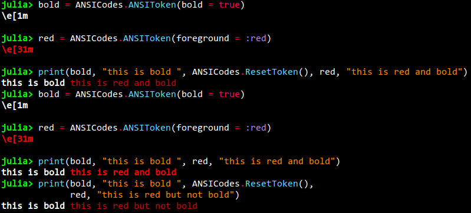

ANSIToken
Some reading of how colors and text styles are printed in a terminal might be good before reading this section, see the Wiki article and this link
The ANSIToken type defined in the exported ANSICodes module is the object that makes the text from OhMyREPL gets it color and bold / italics.
Creating an ANSIToken
Creation of an ANSIToken is done with the constructor:
ANSIToken(;foreground, background, bold, italics, underline)The types of the foreground and background keywords can either be a Symbol or an Int.
The different possible symbols are: :default, :black, :red, :green, :yellow, :blue, :magenta, :cyan, :light_gray, :dark_gray, :light_red, :light_green, :light_yellow, :light_blue, :light_magenta, :light_cyan, :white.
Too see how these colors look in your terminal there is the ANSICodes.test_ANSI() function.
In case the argument type is an integer it should be between 0 and 256. To see what color each number represent there is the ANSICodes.test_ANSI_256() function.
Not all terminals support the 256 color version, for example the default Windows command prompt does not. On Windows you can install for example mintty which has better color support. On other OS's consult Google for how to enable 256 color support for the terminal.
If you want to convert between RGB hex codes and the 256 color codes the script at this link is quite useful.
The keyword arguments bold, italics, and underline are simply bools representing if the text should have that attribute.
An ANSIToken can be show-ed which will print the ANSI code of it in the style that successive text will be printed in.

Using an ANSIToken
By printing an ANSIToken to the terminal it sets up the following printed text to be printed in the style defined by the token. To print a text in the format of the ANSIToken simply print the token first followed by the text:

Simply printing a new token will not reset previously activated tokens. For example, if you have started printing in bold, printing a token that sets the foreground to a color will not stop the bold from still being in effect. To reset everything, there is a ANSICodes.ResetToken that resets the printing to the default state:

If you create a token that actually has bold = false then it will of course change the bold mode:

Merging ANSITokens
Two or more ANSITokens can be merged creating a new ANSIToken that has all properties of the merged ones. If two of the ANSIToken specify the same property (for example the foreground color) then the property of the last token in the argument list is used:

The resulting token in the figure above is green because the foreground of the green token overrides the foreground in the underline_red one.